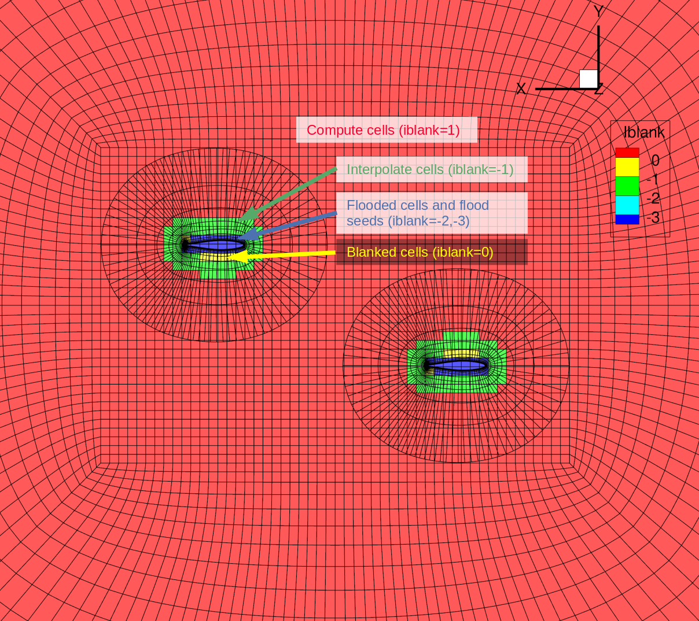

Checking the Overset Mesh
Introduction
Getting different meshes that are overset to work well together can be tricky. Here we will show how ADflow can be used to check if there will be any problems with the hole-cutting algorithm and connectivities, and also to visualize which cells are compute cells, interpolate cells, blanked cells, and flooded cells.
Files
Navigate to the directory oversetopt/ihc_check in your tutorial folder.
Copy the following files from the volume meshing directory:
$ cp ../mesh/volume/overset_combined.cgns .
Create the following empty runscript in the current directory:
ihc_check.py
Dissecting the ADflow runscript
Open the file ihc_check.py with your favorite text editor.
Then copy the following into this file.
from baseclasses import AeroProblem
from adflow import ADFLOW
# from mpi4py import MPI
# import shutil
# import collections
# ======================================================================
# Input Information
# ======================================================================
# File name of the mesh
gridFile = "overset_combined.cgns"
# Common aerodynamic problem description and design variables
ap = AeroProblem(name="ihc_check", mach=0.3, altitude=1000, areaRef=0.24 * 0.64 * 2, chordRef=0.24)
# dictionary with name of the zone as a key and a factor to multiply it with.
oversetpriority = {}
aeroOptions = {
# Common Parameters
"gridFile": gridFile,
"outputDirectory": "./",
"mgcycle": "sg",
"volumevariables": ["blank"],
"surfacevariables": ["blank"],
# Physics Parameters
"equationType": "RANS",
# Debugging parameters
"debugzipper": False,
"usezippermesh": False,
"nrefine": 10, # number of times to run IHC cycle
"nearwalldist": 0.1,
"oversetpriority": oversetpriority,
}
# Create solver
CFDSolver = ADFLOW(options=aeroOptions, debug=False)
# Uncoment this if just want to check flooding
CFDSolver.setAeroProblem(ap)
name = ".".join(gridFile.split(".")[0:-1])
CFDSolver.writeVolumeSolutionFile(name + "_IHC.cgns", writeGrid=True)
This will not actually run a flow simulation, it will just carry out the setup.
Adding 'blank' to the volumevariables and surfacevariables (which tells ADflow which variables to save in the results) will allow us to see which cells are compute, interpolate, blanked, and flooded cells.
There are some new parameters here related to overset meshes that we have not seen before.
The
usezippermeshoption isTrueby default so we set it toFalsehere to skip the zipper mesh generation, because it may crash if the hole cutting does not work. A zipper mesh provides a watertight surface for force integration in the region where cells overlap.The
nrefineoption is set to 10 (this is the default). This option specifies the number of times the implicit hole cutting algorithm is run.The
nearwalldistoption is set to 0.1 (this is the default). This option controls how compute cells are preserved near walls. Changing this value may prevent flooding. We usually use 0.01 m for a full-scale aircraft mesh.The
oversetpriorityoption can be used to specify a dictionary in which the key is the family name of a mesh and the corresponding value is a factor to multiply the volumes of that mesh’s cells by for the hole-cutting algorithm. The hole-cutting algorithm prioritizes keeping smaller cells, so this can be used to prioritize keeping the cells of a certain volume mesh. We don’t specify anything for theoversetprioritybut just include it here to show some of the options available.
There are other overset options that have not been discussed here. Those can be found in the pyADflow run script.
Run it yourself!
Run the script:
$ python ihc_check.py
If all goes well, the output will show that there are 0 orphans and there will not be any error messages related to connectivities.
Visualizing the iblank values in tecplot
Now we can check what roles the different cells in the overlapping regions have been given. Follow the following instructions in Tecplot.
Load
overset_combined_IHC.cgnsbut checkAdvanced optionsbefore clickingOpenSelect
One Tecplot zone per non-poly CGNS zone/solutionand clickOKCheck
MeshunderShow zone layers(selectyesif it asks you if you want to turn on surfaces)Zoom in to the symmetry plane
Check
ContourunderShow zone layersClick on
Details...next toContourSelect
iblankin the drop-down menu at the top leftClick on
Set levels...and set the minimum level to -3 and the maximum level to 0Set the number of levels to 4, then click
OKandCloseClick on
Zone Style..., go to theContourtab, then highlight all the zones (ctrl+A) and change theContour TypetoPrimary value flood(right click on the contour type of one of the zones)Under the
Show Contourcolumn, uncheck all thewing_vols_combinezones and then clickCloseFinally, uncheck
ShadeunderShow zone layersif it was selected by default
You should see something like the following image.
{kind=link}
Now turn off the contours for all the background zones and switch on the contours for all the wing_vols_combine zones.
{kind=link}
Note
In Tecplot, Plot -> Blanking -> Value Blanking is a useful tool to hide or show cells with certain values (e.g., if you want to see only the interpolation cells and hide everything else).